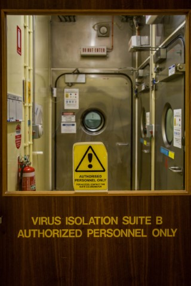
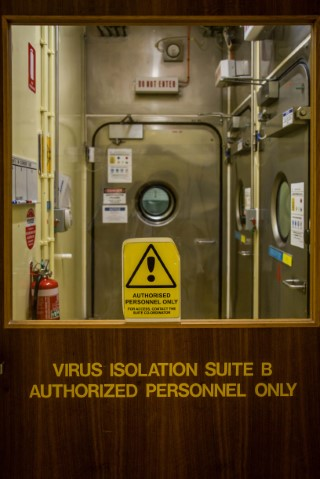
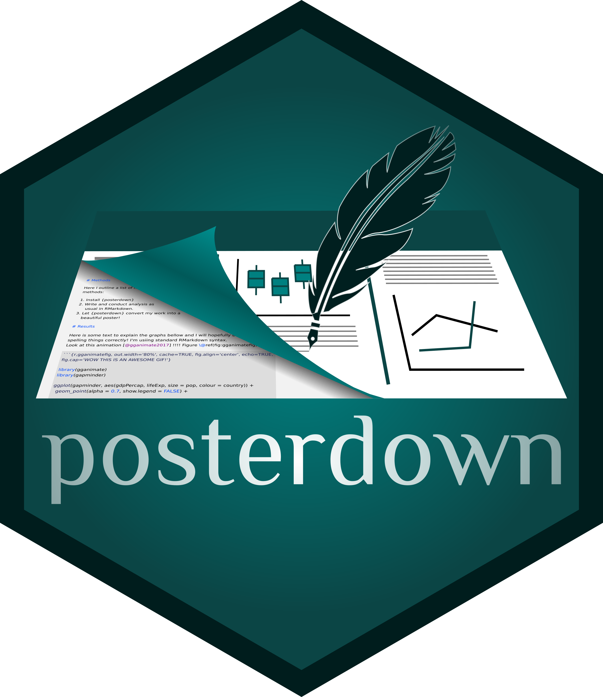

Detecting Highly Pathogenic Viruses
Is your PCR “fit for purpose”?
Mai Hlaing Loh
Proficiency Testing & Reference Materials
Australian Animal Health Laboratory

Introduction
My name is Mai Hlaing Loh (pronounced May-Lee-Young Low) and I manage projects within the Proficiency Testing and Reference Materials team based at CSIRO Australian Animal Health Laboratory
Before Data School FOCUS
Before Data School FOCUS I did not have any coding experience. My daily work pattern involved turning csv files into rich Excel files, or collating more than 40 spreadsheets of testing data from different laboratories into one “collated data table” and forcing Excel to produce Z-score analysis or Youden Plots using convoluted formula which often corrupted! These graphs and tables were cut and pasted and painstakingly reformatted in Microsoft Word. In 2018 my team produced 37 reports manually and with new projects coming online we are set to increase this number to over 50. As this will be unsustainable, we are utilising the power of R to automate as much of the process as possible.
Utilising the power of R
As the Proficiency Testing programmes my team provides are expanding at an exponential rate in terms of participating laboratories, pathogen targets and countries globally. It was our goal was to automate this process utilising R to increase the efficiency of this process. Instead of downloading csv files and manipulating the data in Excel, we are now working with AAHL’s informatics team to take the directly from the server of our Laboratory web portal and process the data ‘in situ’ through R, outputting directly into final draft versions of our reports using Markdown & Knitr.
Keeping an eye on nasty pathogens & keeping them out of Australia
My team at the CSIRO Australian Animal Health Laboratory is accredited by the National Australian Testing Authority (NATA) to International Standards Organisation (ISO) 17043 - Proficiency Testing. In a nutshell: we directly support AAHL and veterinary testing laboratories across Australia, Asia and the Pacific maintain or establish diagnostic testing capabilities to detect pathogens of significance to agricultural and human health. Examples of these pathogens are Avian Influenza virus, Hendra virus, Foot and Mouth Disease Virus, African swine disease virus and White spot syndrome virus to name just a few! This is an integral part of protecting Australia’s pre- and post-border biosecurity preparedness for these pathogens.
 

What is a proficiency test panel?
We provide quality tested blind testing panels which consist of tubes of various viruses and tubes containing no virus which are sent to veterinary testing laboratories. Laboratories test these tubes using their routine diagnostic test e.g. Avian Influenza virus and report their results back to my team. We analyse these results along with other participating laboratories and process their data using robust statistical methods, creating tables containing comparisons of all laboratory result data, graphical representations of Z-score and Youden plot analyses. Commentary on diagnostic testing methods used and finally an assessment detailing whether the laboratory has passed the round of Proficiency Testing is included.
Old style Excel plots
New R plots
What was learning R like?
Like learning any written component of a spoken language, learning to “speak” R was the most challenging part of Data School. But like learning any language, once it “clicked” and one slowly grasps the rules of the grammar of syntax and graphs, one can see the flow of syntax and how it is laid down “stone by stone” to create a logical path to achieve the visualisation and output desired. I found the best way to learn what format worked with R and which didn’t was to repeatedly try different syntax patterns (and having an amazing core teacher like Stephen Pearce!).
Next steps
I have loved exploring the myriad of packages that one can utilise with ggplot2 and Tidyverse; combining these with Markdown has the potential to reduce the time my team uses to process data into visulisations and standard report formats to deliver to clients and stakeholders. Now I have a taste of coding it has reawakened my love of both languages and (bio)informatics, I am keen to expand my knowledge into Python and well as of course trying to become fluent in R in the next few years.



My Data School Experience
Data School has been fantastic. An unusual opportunity to have dedicated time to learn specific skills in a new area. The online/part-time format was new for the Data School FOCUS, but I think it worked very well. We had one week “in person” at Black Mountain, which cemented the connections and familiarity we have with other members of the group. Each week we would log-on for two days into WebEx even if we were working on our own data in silence, it truly was a virtual classroom. My cohort all feel something is amiss not sitting (virutally) with each other for 2 days a week! We will be implementing the syntax we have developed into our ISO accredited programmes with an ambitious deadline of December. Working with our informatics teams we will develop linkages using Shiny to have laboratories upload their data into our AAHL laboratory information webpage where the data will be housed and processed directly. I have thoroughly enjoyed Data School, and although it can be challenging taking two days a week out of your core role, I highly recommend Data School FOCUS to anyone. Also a big “shout out” to our amazing facilitator Natalie Lui, one of the best I’ve experienced in CSIRO (or anywhere!).